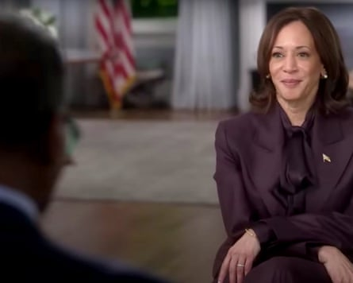
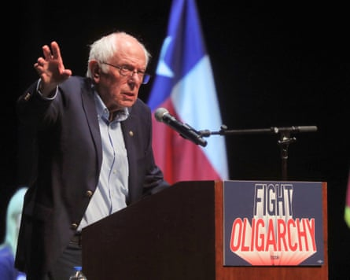
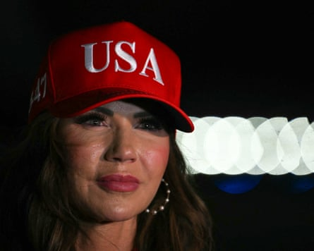
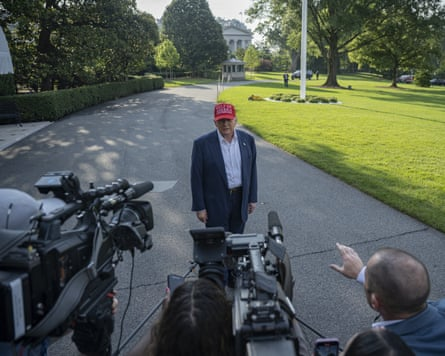

Bernie Sanders , the venerable democratic socialist senator from Vermont , was not in a mood to pull punches.
“Trump is undermining our democracy and rapidly moving us towards authoritarianism, and the billionaires who care more about their stock portfolios than our democracy are helping him do it,” he fumed in a statement last week.
Such outbursts have been common in recent months as Sanders has taken up a leading position opposing Donald Trump ’s second term, and flagging his concern that the president is waging a war against the media – and winning.
The reason for his ire last week was highly specific: a deal struck by Paramount, the corporate parent of CBS News, to pay Trump $16m in a donation to his presidential library, the archival centers that many presidents set up after they leave office.
Paramount settled with Trump for $16m over 60 Minutes interview with Kamala Harris.Photograph: Federal Communications Commission
The settlement puts an end to the US president’s lawsuit over the network’s editing of an interview on 60 Minutes, the flagship CBS news magazine show, with then vice-president Kamala Harris during the 2024 election. Trump claimed – without any serious evidence – that the edit of the interview betrayed bias against him.
60 Minutes journalists countered – and nearly all other observers agreed – that it was just standard editing, common to all major interview segments.
So then why settle? The key may lie with the fact that the super-wealthy Redstone family, which owns Paramount, is seeking to gain approval from Trump administration regulators for an $8bn deal to sell Paramount to the movie studio Skydance – a deal in which they stand to profit with a $2.4bn payday.
“Paramount may have closed this case, but it opened the door to the idea that the government should be the media’s editor-in-chief,” said lawyer Bob Corn-Revere of the Foundation for Individual Rights and Expression.
No wonder Sanders was mad. He has warned that the Paramount deal “will only embolden” Trump to continue attacking, suing and intimidating the media which the US president has repeatedly labeled “the enemy of the people”. It was, Sanders said, a “dark day for independent journalism and freedom of the press”.
Bernie Sanders speaks during a stop in the Fighting the Oligarchy tour in McAllen, Texas, 20 June 2025.Photograph: Joel Martinez/AP
Many would agree. For as Trump’s second presidency has unfolded amid chaos, vast cuts to government spending and a rollback of civil liberties, his repeated and blistering attacks on the press have been one of the things most worrying those who fear for America’s democratic health.
The US media is now in a deep crisis of the sort that observers of creeping autocracy in places such as Hungary might find familiar. For the Paramount deal is not alone. The settlement follows another, six months ago, when Disney – which owns ABC News – put to bed a legal claim over how George Stephanopoulos, one of its top news anchors, described the president’s sexual assault of the magazine writer E Jean Carroll. Again, the payment was $16m.
He is even pursuing a legal claim against a relatively tiny newspaper for printing a poll he didn’t like: Trump’s lawsuit against the Iowa pollster Ann Selzer accuses her and the Des Moines Register of fraud, after she conducted a poll right before the 2024 election that showed Kamala Harris leading in Iowa, a state which she did not ultimately win.
Last week the Trump administration also threatened legal action against no less a news giant than CNN , over its reporting on an app that warns users of nearby immigration enforcement agents. As the administration continues its mass deportation efforts, the homeland security secretary, Kristi Noem, said her department and the Department of Justice are now examining the idea of prosecuting the network.
Kristi Noem watches Donald Trump speaking off frame to journalists as they arrive at Joint Base Andrews in Maryland on 4 July 2025.Photograph: Andrew Caballero-Reynolds/AFP/Getty Images
“We’re working with the Department of Justice to see if we can prosecute them,” Noem said of CNN , “because what they’re doing is actively encouraging people to avoid law enforcement activities and operations. We’re going to actually go after them and prosecute them. What they’re doing is illegal.”
Trump then added, seemingly for good measure, that he believed the network’s reporting on the success – or lack thereof – of the US bombing on Iran could also be examined. “Our people have to be celebrated, [and] not come home to ‘What do you mean we didn’t hit the targets?’” Then he crystallised his entire approach: “You have scum. CNN is scum. MSDNC [his insult for MSNBC] is scum. The New York Times is scum. They’re bad people. They’re sick.”
But if Trump is determined to wage a fierce crackdown on the press in the US, in some high-profile quarters it has been met with a distinct lack of resistance – especially from news organizations whose owners are billionaires or large corporations, keenly aware of Trump’s control of the nation’s regulators and their power to make or break a company’s fortunes.
Indeed, while the legal settlements with Trump represent a compromise of press freedoms, they may also represent an economic reality: that news outlets are more of a curse than a blessing to the multibillion-dollar media corporations that own them.
The billionaire owners of both the Los Angeles Times and the Washington Post – the biotech mogul Patrick Soon-Shiong and Amazon’s Jeff Bezos, respectively – have conspicuously moved their once-powerful newspapers closer to Trump and his Maga movement. Their opinion sections, both once fierce havens for Trump critics, have been the subject of particular attention by their owners – and the outraged resignation letters of staff have appeared to make little impact.
“A generation ago this would have seemed an outrageous story in the history of journalism,” said Bob Thompson, a media professor at Syracuse University.
Not now in Trump’s America. It is a two-pronged spear: even as Trump and his administration have launched an unprecedented attack, at the same time significant parts of the US media have seen its owners and power brokers often fold their hands.
The head of Reporters Without Borders, Clayton Weimers, said : “A line is being drawn between the owners of American news media who are willing to stand up for press freedom, and those who capitulate to the demands of the president.”
Jameel Jaffer, the director of the Knight First Amendment Institute at Columbia University, said: “Calling these ‘settlements’ doesn’t quite capture what’s happening. It’s more like surrender – or even payoff.”
The Trump administration has even signaled precisely that. Brendan Carr, Trump’s handpicked chair for the Federal Communications Commission (FCC) – which holds the reins over whether the Redstone family gets its $2.4bn payday – said in an interview last year that “the news distortion complaint over the 60 Minutes transcript is something that is likely to arise in the context of the FCC review of that transaction”, referring to the Paramount-Skydance deal.
The Democratic party, without power and shouting from the sidelines, is furious. The leftwing Massachusetts senator Elizabeth Warren on Wednesday called for an investigation into the Paramount settlement.
“With Paramount folding to Donald Trump at the same time the company needs his administration’s approval for its billion-dollar merger, this could be bribery in plain sight,” Warren said in a statement.
The settlement, she said, exposed “a glaring need for rules to restrict donations to sitting presidents’ libraries” – referring to the Trump entities that both ABC and CBS said their settlement payments would be directed – and added that “the Trump administration’s level of sheer corruption is appalling, and Paramount should be ashamed of putting its profits over independent journalism”.
In May, Warren, Sanders and their fellow senator Ron Wyden sent a letter to the Paramount CEO, Shari Redstone, cautioning her that “under the federal bribery statute, it is illegal to corruptly give anything of value to public officials to influence an official act”.
But prosecutors in the state of Delaware, where Paramount is incorporated, appear unlikely to open an investigation.
Perhaps most chilling has been Trump’s ongoing attack on the Associated Press , the news agency that is generally relied on to announce the winners and losers of individual elections, up to and including the presidency. When Trump ordered the Gulf of Mexico renamed to “Gulf of America”, and the AP continued to use both names – noting that the rest of the world still uses the original – Trump jumped on it as a pretext to ban AP reporters from the White House.
The AP has sued, but whatever the result, Trump’s attempt to undermine the impartiality credentials of an organisation that is crucial to letting the American people know who their next president is may prove even more dangerous in the long run. And while AP remains banned, official coverage of White House activities has been opened to various new media individuals and groups with no history of impartial journalism at all, and who appear to be selected entirely for their willingness to ask Trump sycophantic questions.
The political and legal assault could hardly have come at a worse time for American journalism, either, which is assailed by economic headwinds that would be challenging even under a more friendly administration. Scores of once healthy and powerful regional newspapers and television stations have declined or closed. News deserts have appeared all over the country.
Donald Trump departs the White House for visit to Alligator Alcatraz, Florida, on 1 July 2025.Photograph: Anadolu/Getty Images
Big TV names – such as CNN and its rival MSNBC – are being jettisoned by the owners that once provided a safe haven for them, and few expect the good economic times to return as the rise of social media giants and artificial intelligence chokes off advertising and revenue streams for a public increasingly sceptical of mainstream media.
Meanwhile, some of the fresh new digital startups that were meant to take their place have either shrunk themselves or been axed. Names such as BuzzFeed, HuffPost and Vice News that were once darlings of the digital media world are pale shadows of their former selves, unlikely to provide any sort of bulwark against Trump while mired in economic difficulties. One of the few booming parts of the US media landscape? Fox News, the Trump-boosting conservative channel owned by Rupert Murdoch and his family.
“Part of the various crises in journalism, from the business model to the interference of an aggressive presidential administration, is that so much of journalism are in fact little compartments in huge corporate entities for whom the standards of American journalism, the first amendment, the obligation to inform the citizenry in a republic, are not at the top of their priorities,” Thompson said.
“It’s no surprise that we would have constant conflicts of interest when news organisations are owned by enormous, multivalent corporations that have got a lot of other interests besides telling the truth in journalism.”
In this world, the Trump administration’s role in the crisis of US journalism is not as singular villain, but as just one more factor in an area of American civic life that was already deeply ailing and standing near the edge of a cliff. Trump and his allies have just started pushing it closer.
“As it collapses before our very eyes, we might be surprised that it didn’t happen a long time ago,” Thompson said.